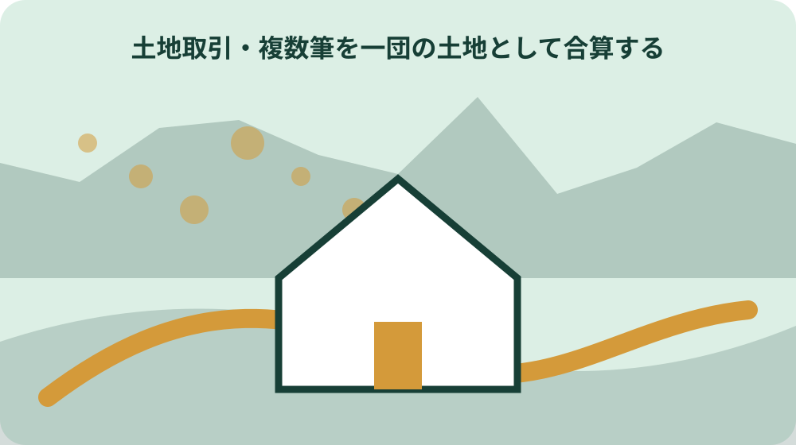

先に結論を確認する
この記事の答え：権利を取得する買主側が届け出ます。賃貸借では借主など取得者側です。
森町で最初に照合する条件：森町では都市計画区域内と区域外で届出面積が異なるため、住所や公図だけで決めず、対象地の区域を役場で確認する。
契約書を受け取った日に期限表を作る
国土利用計画法の事後届出は、土地の引渡日や代金決済日ではなく、土地売買等の契約を締結した日から期限を数える。静岡県は契約締結日を含めて2週間以内と案内しているため、契約書を受領した時点で締結日を確定する。
期限表には契約締結日、14日目、提出予定日、土地の所在、取得者を並べる。契約書に停止条件や複数の締結日が記載されていて起点が判断できない場合は、自己判断で後の日を採らず、契約内容を示して森町の担当へ確認する。
期限内に様式と添付資料をそろえるには、契約前から区域と面積を確認しておく必要がある。契約後の初日は期限計算、現行様式の取得、全筆の一覧化に使い、2週間目を作業開始日にしない。
たとえば8月3日に契約した案件なら、契約日を含む2週間の数え方を県案内で確認し、休日特例の有無までカレンダーに書く。具体日を一度置くことで、引渡日や登記申請日を誤って起点にした計算を発見できる。契約日欄は契約書の署名日、電子契約の成立記録など根拠箇所も併記し、社内決裁日や仲介会社から受け取った日との違いを残す。締結日の読み方に疑義があれば、その日のうちに契約担当と町へ照会する。契約当日に全筆の地番・面積・取得者を読み上げ、期限表の案件と契約書が同じ取引を指すか確認する。後日の追加入手資料で対象筆が増えた場合は、元の期限表を上書きせず変更日時を残す。
権利取得者を届出名義として確定する
届出義務を負うのは土地に関する権利を取得した者で、売買なら買主、権利金を伴う賃貸借なら借主が該当し得る。売主側が契約書を保管していても、届出名義を売主に置き換えることはできない。
法人取得では法人名、所在地、代表者を契約書と届出書で照合する。共有取得なら各共有者と持分を整理し、森町が用意する共有者一覧を使う条件に当たるか確認する。
提出作業を仲介業者や代理人が行う場合も、権利取得者と実務担当者を別欄にする。誰が届出義務者で、誰が書類を提出し、町からの補正連絡を誰が受けるかを契約関係者間で決める。
信託受益権や契約上の地位の譲渡では、契約当事者名だけから土地の権利取得者を読み違えることがある。対象権利の記載箇所を抜き出し、届出者欄へ転記する前に町の担当へ契約構造を説明する。共有取得では一人を代表者にしただけで他の取得者が消えるわけではない。契約書、共有者一覧、本紙の権利取得者欄を三方向で照合し、住所表記や法人番号の不一致も補正前に見つける。
対象地が都市計画区域内かを確認する
森町では都市計画区域内と都市計画区域外で届出面積が異なる。森町の都市計画図は1万分の1の用途地域図だが、公式ページは概略を示す参考資料と位置付け、詳細は役場建設課で確認するよう案内している。
判定時は所在地だけでなく地番ごとに区域を確認する。図面上の境界付近、複数筆が連続する土地、区域内外をまたぐ可能性がある土地は、画面の見た目だけで都市計画区域外と決めない。
確認結果には使用した都市計画図の名称と確認日、町へ示した地番、町から得た区域回答を残す。土地取引届出の提出先と、都市計画区域を確認する窓口は役割が異なるため、照会内容も分ける。
用途地域の色が塗られていないことだけで都市計画区域外とは判断できない。用途地域の指定有無と都市計画区域の内外は別の確認事項なので、図の凡例と区域線を読み、必要なら建設課都市計画係へ地番を示す。区域回答を口頭で得た場合は、照会地番と回答日を記録する。隣接筆の回答を対象筆へ流用せず、契約対象となる全筆を一覧で提示して確認漏れを防ぐ。

5,000平方メートルと10,000平方メートルを使い分ける
森町公式ページは、町内の都市計画区域では5,000平方メートル以上、都市計画区域外では10,000平方メートル以上の取引を届出対象として案内している。県の一般表にある市街化区域2,000平方メートル以上という区分を、森町に存在すると推定して適用しない。
各筆について登記面積、契約対象面積、所在区域を表にし、適用する面積基準を示す。共有地は県案内が原則として共有地全体の面積を基準にするとしているため、取得持分だけを掛けて基準未満と判断しない。
土地が二つの区域にまたがる場合、静岡県は一般表の上段にある小さい方の面積基準で判断すると案内している。森町で実際にどの区分へ当たるかは、全筆と区域図を示して契約前に確認する。
面積は登記面積、実測面積、契約書記載面積が一致しない場合がある。どの面積で届出要否を判定するかを町へ確認し、採用値と未採用値を同じ表に残して、都合のよい小さい数値だけを選ばない。5,000平方メートルまたは10,000平方メートルちょうども『以上』に含まれる。端数処理で基準未満に見せず、平方メートル単位の原数値と合計式を保存する。
複数筆を一団の土地として合算する
一筆ごとの面積が基準未満でも、同じ権利取得者が一連の計画で取得する土地の合計が基準以上なら、買いの一団として届出対象になる。契約書を複数に分けたことだけでは判定を分けられない。
一団の確認表には取得者、各筆の地番と面積、位置関係、契約日、利用目的を並べる。隣接していない土地や取得時期が異なる土地を含む場合も、自分で除外せず全体像を町へ示す。
売主が複数でも取得者が同じ計画で集める土地なら合算の検討が必要になる。仲介会社ごとに別のファイルを作る場合も、取得者側の総括表で全契約を横断して確認する。
県の説明は『買いの一団』として取得者側から土地の合計を見る。売主Aから3,000平方メートル、売主Bから2,500平方メートルを連続取得する例では、別契約でも合計5,500平方メートルとして森町の区域基準へ照合する。一団の土地を示す位置図には全筆を同じ縮尺で表示し、契約ごとの色分けと総面積を付ける。取得時期が離れる場合は、計画の連続性を町へ説明できる資料を残す。
売買以外の対象取引を契約書で照合する
対象となり得る取引は売買に限られず、交換、営業譲渡、譲渡担保、共有持分の譲渡、代物弁済、現物出資、売買予約、信託受益権や契約上の地位の譲渡などがある。契約書の表題だけで対象外と決めない。
地上権や賃借権の設定・譲渡では、権利金など対価の有無も確認事項になる。土地を直接取得しない形式でも、土地に関する権利が有償で移る内容なら、契約条項を示して届出要否を確認する。
契約形態の照合では、移転する権利、取得者、対価、対象面積、契約締結日を抜き出す。法的評価が必要な特殊契約は記事だけで結論を出さず、町の担当と契約実務の専門家へ同じ資料を示す。
無償の使用貸借、地役権、担保設定など、一覧に名称がない契約を名称だけで対象・対象外へ振り分けない。届出対象は権利移転と対価の組合せで決まる場合があるため、該当条項を示して照会する。対象外と回答された場合も、契約形態、面積、回答部署、確認日を記録する。後に有償条件や取得者が変われば、過去回答をそのまま使わず再確認する。
契約締結日から2週間を暦で数える
静岡県は契約締結日から2週間以内に、土地が所在する自治体の窓口へ届け出るよう案内している。森町内の土地は森町役場が窓口である。契約締結日を含めて数えるため、翌日を1日目として14日後まで延ばす計算はしない。
契約書が複数ある一団の土地では、契約ごとの締結日を記録する。最後の契約日だけを全体の起点にすると、先に締結した契約の期限を過ぎるおそれがある。
提出期限表には14日目だけでなく、書類完成予定日と提出予定日を置く。面積・区域・一団の確認に回答待ちがあっても法定期限は進むため、契約前相談で不明点を減らす。
契約締結日を含めた日数表は、契約ごとに一行作る。変更契約や覚書を締結した場合、それが新たな土地取引の契約に当たるかは本文だけで決めず、当初契約と変更内容を町へ示して期限を確認する。期限表の計算者と確認者を分け、14日目の曜日まで読み合わせる。契約解除や再契約があった場合も、古い行を消さず履歴として残す。
休日に当たる期限を次の開庁日に補正する
2週間目の日が土曜日、日曜日、祝日など行政機関の休日に当たる場合、静岡県はその次の開庁日を期限とする特例を案内している。休日でない日を都合に合わせて翌営業日へ移す制度ではない。
年末年始や連休をまたぐ契約では、森町役場の開庁日を公式案内で確認する。郵送提出を予定する場合は、発送日と到達日のどちらで受け付けるかを事前に町へ確認する。
期限表には本来の14日目、休日の種別、補正後の期限、確認した開庁案内を残す。担当者が変わっても休日補正の根拠を説明できるようにする。
休日特例を使う場合でも、提出書類の作成期限まで後ろへ動かさない。補正後の期限は最終的な法定期限として記録し、社内・家族内の提出目標日はその数日前に設定して、窓口確認の余地を確保する。町の開庁時間、提出窓口、郵送可否は別項目で確認する。休日翌日の朝に初めて書類を確認する日程は避け、控え部数まで前開庁日に点検する。
2026年4月以降の新様式を選ぶ
国土利用計画法施行規則の改正により、2026年4月1日以降に届け出る場合は新様式が必要になる。契約が2026年3月31日以前でも、実際の届出日が4月1日以降なら旧様式を使わない。
森町公式ページは入力補助付きExcel、直接入力用Excel、手書き用PDFを案内している。入力方法の違いであり、対象条件や期限を選べる三制度ではない。
保存ファイルにはダウンロード日、様式の適用開始日、入力方法を付ける。以前の案件フォルダにあるExcelを複製せず、提出前に森町公式ページの現行ファイルと照合する。
新様式への切替は契約日ではなく届出日で判定する点が重要である。3月中の契約を4月に届ける案件では、旧様式で作成済みでも新様式へ転記し、項目追加や記載方法の変更を確認する。Excelの入力補助で表示された結果も、契約書・筆一覧と読み合わせる。様式ファイル名だけで新旧を判断せず、森町ページの『2026年4月1日以降』という適用表示を確認する。
筆一覧・共有者・海外住所の別紙を揃える
届出書に全筆を記載できない場合は筆一覧、譲受人に共有者がいる場合は共有者一覧、譲受人の住所が国外の場合は海外居住者用の別紙を使える。別紙は該当情報を本紙から切り離すためではなく、本紙を補う資料である。
筆一覧では地番、面積、区域を総括表と照合する。共有者一覧では契約書上の氏名・住所・持分との一致を確認し、海外居住者用別紙では国内連絡先など現行様式が求める欄を確認する。
別紙のページには案件名と本紙との対応が分かる識別を付ける。複数契約の別紙を混在させず、提出部数分をそろえた後にページ欠落がないか点検する。
筆一覧の合計面積は一団判定表の合計と照合し、共有者一覧は契約書の権利取得者と照合する。海外居住者用別紙を使う場合も、国内住所がないという理由で連絡方法の確認を後回しにしない。別紙を追加した後は、本紙の筆数・共有者数と一致するか確認する。同じ地番を重複転記したり、枝番を落としたりすると面積合計も変わるため、登記事項と一行ずつ照合する。
提出部数と受付控えを決める
静岡県の案内では届出書の提出部数は2部で、受付控えを希望する場合は3部を用意する。受付控えが必要かは、契約関係者への報告や後日の照会に使うかを考えて提出前に決める。
本紙だけでなく筆一覧などの別紙と添付資料も、町が求める部数・組み方を確認する。県の部数案内だけで森町窓口の綴じ方や提出方法まで決めつけない。
提出時には受付日が確認できる控えを受け取り、補正指示があれば対象書類と回答期限を記録する。受付と内容確認の完了を同じ意味にせず、町からの連絡先を明確にする。
2部・3部という県の案内は紙提出を前提とするため、電子や郵送など別方法を希望する場合は森町の現行取扱いを確認する。受付控えを契約相手へ渡す場合は、原本を誰が保管するかも決める。3部を用意するときは三組とも本紙・別紙・添付図書の版を統一する。押印や署名の要否、控えへの受付表示の方法も、提出直前の窓口確認項目に入れる。
大石の視点：契約日と提出証跡を一冊でつなぐ
公的事実として確認できるのは、届出者、面積基準、一団の土地、契約締結日から2週間という期限、提出様式と部数である。行政資料は、家庭や事業者がどの順番で案件ファイルを作るかまでは定めていない。
ここからは私見である。大石の視点では、契約書、区域確認、各筆面積表、一団判定メモ、届出書、別紙、受付控えを契約日順に一冊へつなぐと、期限計算と提出対象の取り違えを減らせる。
私なら契約締結日、法定期限、実提出日、受付番号、町への照会事項を表紙へ置く。これは法定様式ではなく実務上の提案であり、追加取得や契約変更があれば、公式基準へ戻って新たな届出要否を確認する。
この私見を町の要求事項として表示しないことが重要である。読者が使うチェック表には『公式様式』『県・町の案内』『大石の整理案』の出所欄を設け、行政が求める書類と自主的な保管資料を区別する。私の整理案には法的効力がなく、提出可否を保証しない。町から補正指示があれば公式指示を優先し、整理表側へ変更履歴として反映する。提出後に受付控えを受け取れなかった場合も、私案で受付済みと補完せず、町へ受付状況と確認方法を問い合わせる。